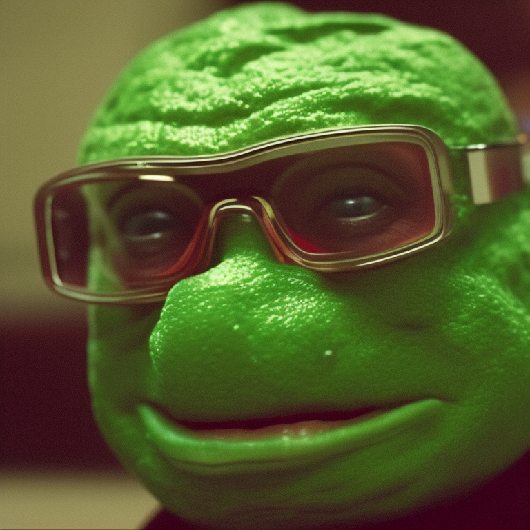

🔥🚀 Introducing PepeAI: The Ultimate Meme Token Revolution! 🐸💥

Get ready for the most mind-blowing and sensational meme token ever, PepeAI! 🌟💯 Pepe the Frog is back, and he's more alive than ever, thanks to cutting-edge AI technology. Say goodbye to the classic cartoon, and welcome the ultra-realistic, next-gen Pepe that will leave you speechless! 😱🤯
🌐🔝 PepeAI is the perfect blend of Internet culture and the limitless potential of artificial intelligence. Our team of world-class developers and AI experts have joined forces to create a unique and groundbreaking token based on the iconic Pepe the Frog. 🤖ğŸ§
💎🌟 Unleash the power of the rarest and most sought-after meme tokens! PepeAI is not just another crypto project; it's a groundbreaking movement set to redefine the meme coin space! 📈🚀

🤩🉠Features and Benefits:
- 🸠Ultra-realistic AI-generated Pepe: Experience the legendary Pepe the Frog like never before! Our state-of-the-art AI brings Pepe to life in astonishing detail, taking the meme game to a whole new level! 😮💥
- 🌠Global community: Join our ever-growing community of Pepe and crypto enthusiasts from all corners of the world, united by their love for memes, technology, and the thrill of the crypto space! ğŸŒğŸ¤
- 📊 Transparent and secure: PepeAI is built on a robust and secure blockchain infrastructure, ensuring transparency, safety, and peace of mind for our investors. 🔒🛡️
- 🎁 Exclusive rewards and perks: Holders of PepeAI tokens will enjoy exclusive benefits, including access to limited-edition PepeAI NFTs, airdrops, and more! 🏆💰

Don't miss out on the opportunity to be a part of the most groundbreaking meme token ever! The hype is real, and the time to invest is NOW! 🚀🌙
Join us on our quest to make history with PepeAI! Follow us on Twitter, Telegram, and Discord for the latest updates, news, and announcements. Let's embark on this exhilarating journey together! 🔥🔥🔥
